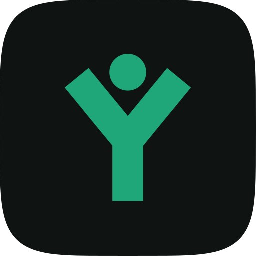
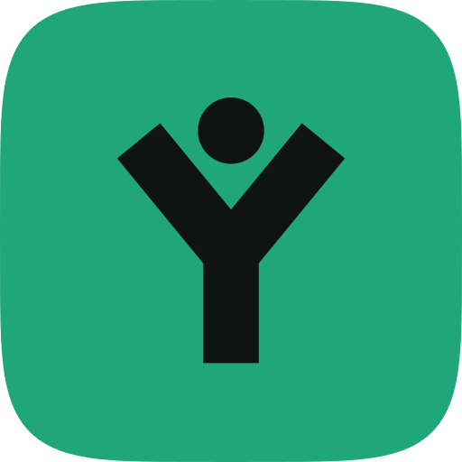
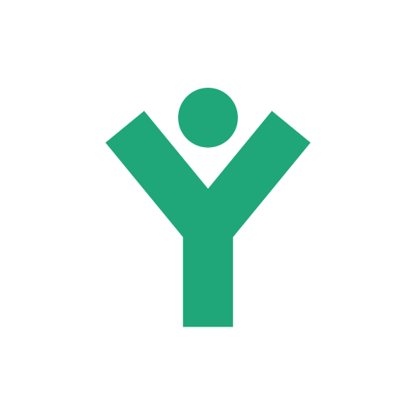
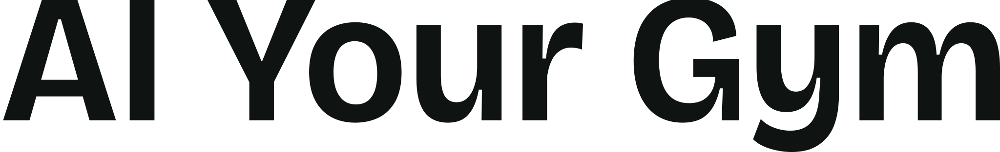

Merkgids · versie 1 · 23 oktober 2026
AI Your Gym
Clubsoftware voor sportscholen. Het merk is rustig, precies en eerlijk: premium zonder opschepperij. Deze gids beschrijft het logo, de kleuren, de letters en de toon. Alle bestanden staan in deze map.
Het beeldmerk
Een figuur met de armen omhoog, die tegelijk de Y van Your vormt. Het staat voor het lid en de sportschool die vooruitgaan, niet voor de software zelf. De figuur is met de hand geconstrueerd in een raster van 32 bij 32: armen haaks afgesneden, romp recht, het hoofd vrij van de armen zodat het ook op 16 pixels los blijft. De tegel is een zachte superellips (geen gewone afgeronde rechthoek), zoals een app-icoon.



Het logo
Het liggende logo (beeldmerk plus woordmerk) is de standaard. Het woordmerk staat in Bricolage Grotesque, vast gezet op gewicht 640, breedte 96 en optische maat 24, en is omgezet naar paden. Typ het logo dus nooit na in een lettertype: gebruik de bestanden of het component AygLogo.
ayg-logo-licht.svg: standaard op kalkwit of wit.ayg-logo-donker.svg: op inkt, donkere foto's en in de donkere modus.ayg-logo-zwart.svg: eenkleurig (stempel, fax, gravure). De figuur is uitgespaard.ayg-logo-wit.svg: eenkleurig wit op een donkere of drukke ondergrond.
ayg-woordmerk.svg: alleen als het beeldmerk al vlakbij staat, of als groot sierwoord (voet van de website).Opbouw
De tegel is 1,4 keer zo hoog als de hoofdletters van het woordmerk; de hoofdletters staan precies in het midden van de tegel. De afstand tussen tegel en woord is 0,46 keer de kapitaalhoogte. De staarten van y en g mogen iets onder de tegel uitsteken.
Vrije ruimte
Houd rondom het logo minstens een halve tegelhoogte vrij. Er komt in die ruimte geen tekst, rand of ander beeld.
Minimummaat
Wel
- De bestanden of
AygLogogebruiken. - Op een rustige ondergrond: kalkwit, wit of inkt.
- Op donker de donkere versie (smaragden tegel).
- Vrije ruimte en minimummaat aanhouden.
Niet
- Uitrekken, kantelen, omlijnen of een schaduw of gloed geven.
- Andere kleuren dan smaragd, inkt, kalkwit, zwart of wit.
- Het woord in een ander lettertype zetten of "AI" anders kleuren.
- De inkten tegel op een donkere ondergrond (hij valt weg).
- Op een drukke foto zonder rustig vlak eronder.
Kleuren
Smaragd is het enige accent (besluit Kane 20-10-2026). Daaromheen kalkwit papier en bijna zwarte inkt; salie, groenblauw, zand en mist zijn bijkleuren voor de hoofdstukken van de website, nooit voor het logo. De waarden in de app staan als tokens in src/app/(aiyourgym)/(website)/aiyourgym/aiyourgym.css; de test src/components/aiyourgym/contrast.test.ts bewaakt het contrast.
| Kleur | Waarde | Gebruik | Contrast (WCAG) |
|---|---|---|---|
| Smaragd | #1FA77A | Logo, knoppen, vinkjes, accentvlakken | Inkt erop 6,08:1 (AA). Wit erop 3,06:1: niet voor tekst. Smaragd op kalkwit 2,68:1: alleen vlak, nooit tekst. |
| Diep smaragd | #08704E | Smaragd als tekst, icoon of lijn op papier | Op kalkwit 5,36:1 (AA) |
| Inkt | #0F1412 | Tekst, logotegel op licht, donkere podia | Op kalkwit 16,31:1 (AAA). Smaragd op inkt 6,08:1. |
| Kalkwit | #F2F0E9 | Papier van de website, woord op donker | Op inkt 16,31:1 (AAA) |
| Grijs (tekst 2) | #545A55 | Bijschriften op papier | Op kalkwit 6,20:1 (AA) |
| Salie | #A8C3A0 | Hoofdstuk Coaching | Inkt erop 9,72:1 |
| Groenblauw | #4FB0BB | Hoofdstuk Planning | Inkt erop 7,32:1 |
| Zand | #D6C29C | Hoofdstuk Groei | Inkt erop 10,68:1 |
| Mist | #9FB8C4 | Hoofdstuk Betrokkenheid | Inkt erop 8,97:1 |
In de donkere modus van de website wordt het accent iets lichter (#2DB886, 7,63:1 op #0C0F0D) zodat het als tekst leest. Het logo zelf houdt overal de vaste merkkleuren.
Letters
- Bricolage Grotesque: koppen en het woordmerk. Op de website smal (breedte 84 tot 88), vet en strak gespatieerd; het woordmerk is rustiger (breedte 96).
- Geist: lopende tekst, cijfers en de interface.
Beide staan onder de SIL Open Font License 1.1: vrij te gebruiken, ook in een logo en in software die we verkopen. De website laadt ze via next/font (zelf gehost, geen verbinding met Google). Maximaal deze twee families.
Toon van schrijven
We schrijven zoals een goede trainer praat: kort, concreet en eerlijk. Nederlands, met je en jij.
Wel
- Zeggen wat het product nu echt doet.
- "Scherp geprijsd", "elke maand nieuwe functies", "gebouwd met AI".
- Concrete voorbeelden uit de sportschool: de balie, de vloer, de les van half zeven.
- De naam altijd als AI Your Gym.
Niet
- "De goedkoopste", "geavanceerde AI", "revolutionair" of andere claims die we niet kunnen onderbouwen.
- Nep-schaarste, aftelklokken, verzonnen reviews, klantlogo's of aantallen.
- Prijzen op de website (die staan alleen in Stripe).
- Varianten als AIYourGym, AiYourGym of AYG in teksten voor klanten.
Iconen en deelafbeelding
- Favicon:
src/app/(aiyourgym)/(website)/aiyourgym/icon.svgen(club)/club/icon.svg. In een donkere browser draait de tegel om. - Apple-icoon (180 px, vol vlak; iOS rondt zelf af):
apple-icon.pngnaast elkicon.svg. - Deelafbeelding (Open Graph, 1200 x 630):
src/app/(aiyourgym)/(website)/aiyourgym/(site)/opengraph-image.tsx, alleen als de website openbaar is. - Beeldmerk als PNG voor drukwerk en presentaties:
ayg-beeldmerk-512.png.
Aanpassen
Alles komt uit een script: node docs/aiyourgym/brand/bron/genereer.mjs (vanuit de hoofdmap). Het schrijft de paden voor de app (src/components/aiyourgym/merk/merk-paden.ts), de SVG-bestanden in deze map en de iconen. Pas de maten van de figuur of het woordmerk alleen daar aan, nooit in de gegenereerde bestanden.